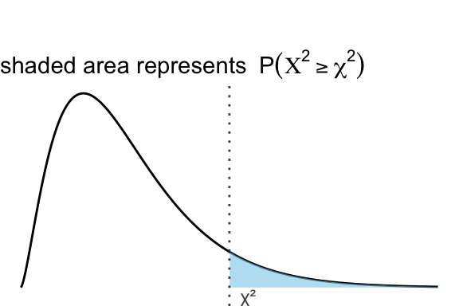

| ν | α = 0.1 | α = 0.05 | α = 0.025 | α = 0.01 | α = 0.005 |
|---|---|---|---|---|---|
| 1 | 2.706 | 3.841 | 5.024 | 6.635 | 7.879 |
| 2 | 4.605 | 5.991 | 7.378 | 9.210 | 10.597 |
| 3 | 6.251 | 7.815 | 9.348 | 11.345 | 12.838 |
| 4 | 7.779 | 9.488 | 11.143 | 13.277 | 14.860 |
| 5 | 9.236 | 11.070 | 12.833 | 15.086 | 16.750 |
| 6 | 10.645 | 12.592 | 14.449 | 16.812 | 18.548 |
| 7 | 12.017 | 14.067 | 16.013 | 18.475 | 20.278 |
| 8 | 13.362 | 15.507 | 17.535 | 20.090 | 21.955 |
| 9 | 14.684 | 16.919 | 19.023 | 21.666 | 23.589 |
| 10 | 15.987 | 18.307 | 20.483 | 23.209 | 25.188 |
| 11 | 17.275 | 19.675 | 21.920 | 24.725 | 26.757 |
| 12 | 18.549 | 21.026 | 23.337 | 26.217 | 28.300 |
| 13 | 19.812 | 22.362 | 24.736 | 27.688 | 29.819 |
| 14 | 21.064 | 23.685 | 26.119 | 29.141 | 31.319 |
| 15 | 22.307 | 24.996 | 27.488 | 30.578 | 32.801 |
| 16 | 23.542 | 26.296 | 28.845 | 32.000 | 34.267 |
| 17 | 24.769 | 27.587 | 30.191 | 33.409 | 35.718 |
| 18 | 25.989 | 28.869 | 31.526 | 34.805 | 37.156 |
| 19 | 27.204 | 30.144 | 32.852 | 36.191 | 38.582 |
| 20 | 28.412 | 31.410 | 34.170 | 37.566 | 39.997 |
| 21 | 29.615 | 32.671 | 35.479 | 38.932 | 41.401 |
| 22 | 30.813 | 33.924 | 36.781 | 40.289 | 42.796 |
| 23 | 32.007 | 35.172 | 38.076 | 41.638 | 44.181 |
| 24 | 33.196 | 36.415 | 39.364 | 42.980 | 45.559 |
| 25 | 34.382 | 37.652 | 40.646 | 44.314 | 46.928 |
| 26 | 35.563 | 38.885 | 41.923 | 45.642 | 48.290 |
| 27 | 36.741 | 40.113 | 43.195 | 46.963 | 49.645 |
| 28 | 37.916 | 41.337 | 44.461 | 48.278 | 50.993 |
| 29 | 39.087 | 42.557 | 45.722 | 49.588 | 52.336 |
| 30 | 40.256 | 43.773 | 46.979 | 50.892 | 53.672 |
| 31 | 41.422 | 44.985 | 48.232 | 52.191 | 55.003 |
| 32 | 42.585 | 46.194 | 49.480 | 53.486 | 56.328 |
| 33 | 43.745 | 47.400 | 50.725 | 54.776 | 57.648 |
| 34 | 44.903 | 48.602 | 51.966 | 56.061 | 58.964 |
| 35 | 46.059 | 49.802 | 53.203 | 57.342 | 60.275 |
| 36 | 47.212 | 50.998 | 54.437 | 58.619 | 61.581 |
| 37 | 48.363 | 52.192 | 55.668 | 59.893 | 62.883 |
| 38 | 49.513 | 53.384 | 56.896 | 61.162 | 64.181 |
| 39 | 50.660 | 54.572 | 58.120 | 62.428 | 65.476 |
| 40 | 51.805 | 55.758 | 59.342 | 63.691 | 66.766 |
| 41 | 52.949 | 56.942 | 60.561 | 64.950 | 68.053 |
| 42 | 54.090 | 58.124 | 61.777 | 66.206 | 69.336 |
| 43 | 55.230 | 59.304 | 62.990 | 67.459 | 70.616 |
| 44 | 56.369 | 60.481 | 64.201 | 68.710 | 71.893 |
| 45 | 57.505 | 61.656 | 65.410 | 69.957 | 73.166 |
| 46 | 58.641 | 62.830 | 66.617 | 71.201 | 74.437 |
| 47 | 59.774 | 64.001 | 67.821 | 72.443 | 75.704 |
| 48 | 60.907 | 65.171 | 69.023 | 73.683 | 76.969 |
| 49 | 62.038 | 66.339 | 70.222 | 74.919 | 78.231 |
| 50 | 63.167 | 67.505 | 71.420 | 76.154 | 79.490 |